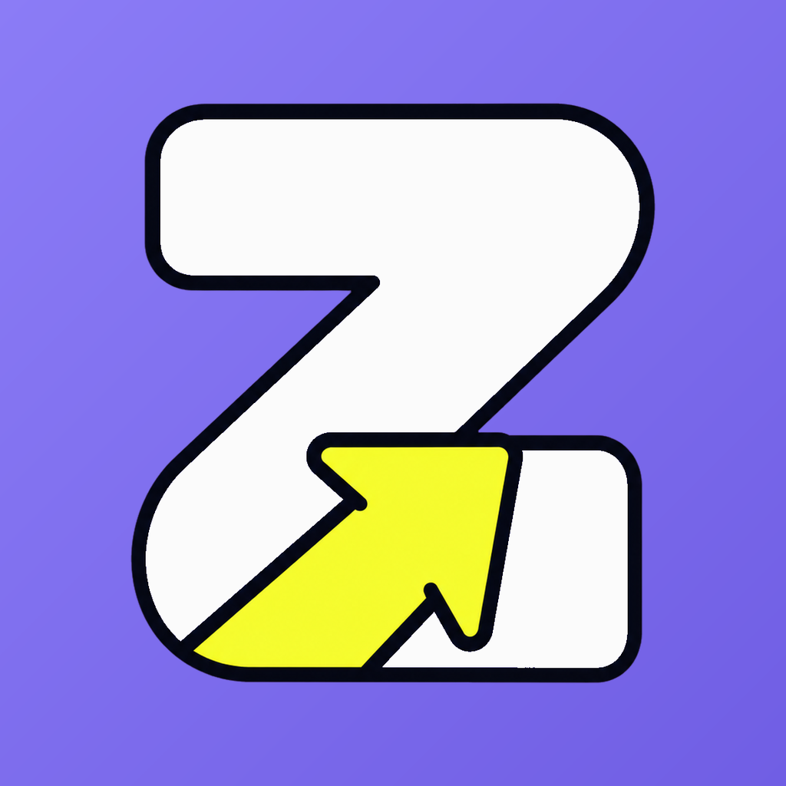
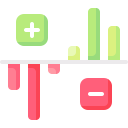

Precisa criar conta?
Não. O usuário pode usar localmente e ativar backup quando quiser.

Zigo Fluxo
Para ver o site com o efeito completo, use o celular em pé ou abra em uma tela maior.
Zigo Fluxo
Orçamentos
Acompanhe limites, progresso e categorias importantes.
Cartões
Veja faturas, compras parceladas, limite usado e limite disponível.

Resumo
Entenda despesas, receitas e patrimônio com gráficos claros.
Tela preparada para receber os prints oficiais do Zigo Fluxo antes da publicação.
Não. O usuário pode usar localmente e ativar backup quando quiser.
Quando ativado, os dados ficam vinculados ao Google Drive do próprio usuário.
Sim. O app separa compras no cartão, faturas, parcelas e limite.
Sim. A base principal é local; backup e anexos em nuvem só entram quando o usuário ativa.
Sim. Contas e lançamentos respeitam a moeda de origem para não misturar valores.
Sim. A política e os termos ficam disponíveis no site e em páginas diretas para as lojas.
Última atualização: 7 de agosto de 2026.
Esta Política de Privacidade explica como o Zigo Fluxo trata informações relacionadas ao uso do aplicativo. A proposta do app é manter a organização financeira sob controle do usuário, com dados principais armazenados no próprio dispositivo e recursos opcionais de backup, anexos e métricas técnicas.
O Zigo Fluxo é um aplicativo de finanças pessoais desenvolvido por Wagner Silva, com operação vinculada à WPS Tecnologia LTDA quando aplicável. Para assuntos de privacidade, o canal informado é suporte@zigoapp.com.br.
Transações, categorias, contas, cartões, orçamentos, metas, empréstimos, configurações e anexos ficam armazenados localmente no aparelho do usuário. O desenvolvedor não acessa esses dados financeiros locais, salvo se o próprio usuário os exportar, compartilhar ou restaurar por serviços externos escolhidos por ele.
Quando o usuário ativa backup, login Google ou anexos em nuvem, o aplicativo pode usar a conta Google autorizada pelo usuário para salvar e restaurar arquivos no Google Drive. O conteúdo fica vinculado à conta Google do próprio usuário e sujeito aos termos e políticas do Google.
Ao enviar opinião pelo aplicativo, o usuário pode fornecer texto, avaliação e, se quiser, e-mail para retorno. O app também pode registrar dados técnicos mínimos, como falhas, eventos de inicialização, presença online anônima, versão do app, plataforma e informações necessárias para estabilidade, segurança e melhoria do serviço.
Se recursos pagos forem disponibilizados, pagamentos serão processados pelas lojas oficiais, como Apple App Store e Google Play, e por serviços de validação de assinatura quando usados. O Zigo Fluxo não coleta número de cartão, código de segurança ou senha de pagamento.
Não vendemos dados pessoais. Dados podem ser tratados por provedores necessários ao funcionamento do app, como Google, Firebase, Apple, Google Play, serviços de backup, autenticação, diagnóstico e validação de assinatura, sempre conforme a finalidade do recurso usado.
O tratamento pode ocorrer para execução de contrato ou procedimentos relacionados ao uso do app, cumprimento de obrigação legal ou regulatória, consentimento do usuário, exercício regular de direitos, prevenção à fraude, segurança e legítimo interesse quando aplicável e compatível com a expectativa do usuário.
Nos termos da LGPD, o usuário pode solicitar confirmação de tratamento, acesso, correção, exclusão, portabilidade, informação sobre compartilhamento, revogação de consentimento e revisão de decisões automatizadas quando aplicável. Como muitos dados ficam apenas no aparelho, a exclusão principal pode ser feita no próprio app, apagando dados locais, backups e anexos vinculados.
O app usa medidas técnicas compatíveis com sua finalidade, incluindo armazenamento local protegido e recursos de segurança do sistema operacional. Backups e arquivos externos permanecem enquanto o usuário mantiver esses dados na conta ou serviço escolhido.
O Zigo Fluxo não é direcionado a crianças. Caso um responsável identifique uso indevido por menor sem autorização, poderá solicitar orientação pelo canal de privacidade.
Alguns provedores de tecnologia podem processar dados fora do Brasil, conforme suas estruturas globais de operação. Quando isso ocorrer, buscamos usar provedores reconhecidos e medidas compatíveis com a legislação aplicável.
Esta política pode ser atualizada para refletir mudanças no aplicativo, recursos, integrações ou exigências legais. A versão publicada no site será a referência vigente.
Última atualização: 7 de agosto de 2026.
Estes Termos de Uso regulam o acesso e uso do Zigo Fluxo. Ao usar o aplicativo, o usuário declara que leu, compreendeu e concorda com estas condições.
O Zigo Fluxo é uma ferramenta de organização financeira pessoal. O app permite registrar entradas, saídas, contas, cartões, faturas, orçamentos, metas, empréstimos, anexos, backups e configurações. O aplicativo não é instituição financeira, banco, consultoria de investimento, contabilidade, assessoria jurídica ou serviço de cobrança.
O usuário é responsável pelas informações que registra, pela conferência dos valores, pela guarda do aparelho, pela ativação de backup quando desejar e pela manutenção de acesso à conta Google ou loja usada em assinaturas. O app auxilia o controle; ele não garante resultado financeiro, economia, lucro, aprovação de crédito ou cumprimento de obrigações fiscais.
Os dados principais são armazenados no dispositivo. O usuário deve manter backup quando não quiser depender apenas do aparelho. Embora o Zigo Fluxo adote medidas de segurança e integridade, nenhum software é imune a falhas, perda de dispositivo, erro do usuário, corrupção de arquivo, problemas de sistema, indisponibilidade de terceiros ou restauração incorreta.
Recursos como login Google, Google Drive, lojas de aplicativo, processamento de compras, diagnóstico, notificações e APIs externas dependem de serviços de terceiros. Cada terceiro possui seus próprios termos, políticas, disponibilidade e regras de funcionamento.
Se forem oferecidos recursos pagos, a contratação ocorrerá pelas lojas oficiais ou meios indicados no app. Preços, renovação, cancelamento, reembolso e impostos seguem as regras da loja aplicável, como Apple App Store ou Google Play. O acesso premium pode depender da validação da assinatura ativa.
O usuário não deve tentar burlar recursos pagos, explorar falhas, realizar engenharia reversa fora dos limites legais, interferir em serviços, usar o app para fraude ou inserir conteúdo ilegal em anexos, notas ou campos do aplicativo.
Nome, marca, identidade visual, adaptações, textos, telas e melhorias do Zigo Fluxo pertencem aos seus respectivos titulares. Partes do projeto podem usar bibliotecas, ícones, gráficos, componentes e bases open source conforme suas licenças próprias, incluindo obrigações de atribuição quando aplicável.
O Zigo Fluxo pode receber atualizações, correções, mudanças de recursos, alterações visuais, ajustes de compatibilidade ou remoção de funcionalidades. Não garantimos disponibilidade ininterrupta, compatibilidade permanente com versões antigas de sistemas ou funcionamento de integrações externas.
Na máxima extensão permitida pela lei, o Zigo Fluxo não será responsável por perdas indiretas, lucros cessantes, decisões financeiras tomadas pelo usuário, lançamento incorreto de dados, perda de acesso a contas externas, falhas de terceiros ou danos decorrentes de uso inadequado do aplicativo.
O app pode oferecer canais para opinião, sugestão ou solicitação relacionada a dados. O envio de mensagem não cria obrigação de resposta individual, manutenção de recurso específico ou suporte contínuo, mas pode ser usado para melhorar o produto.
O usuário pode parar de usar o app a qualquer momento. O desenvolvedor pode suspender recursos, corrigir abusos ou limitar acesso quando houver violação destes termos, uso indevido, tentativa de fraude ou risco à segurança do serviço.
Estes termos são regidos pelas leis do Brasil, sem prejuízo de direitos obrigatórios do consumidor quando aplicáveis.